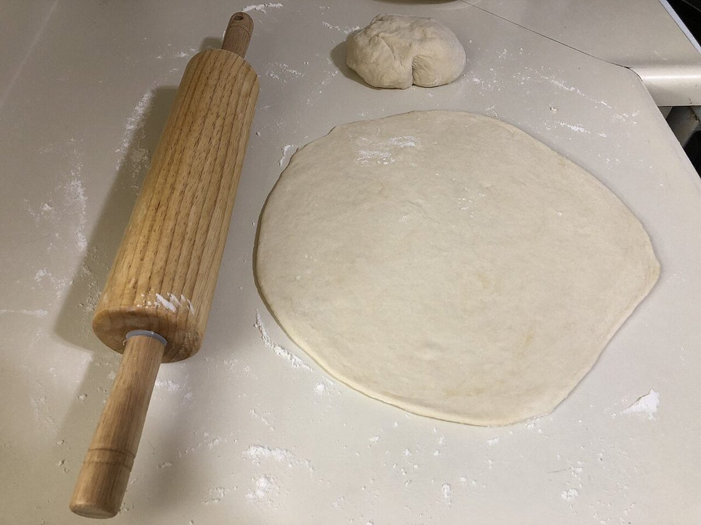
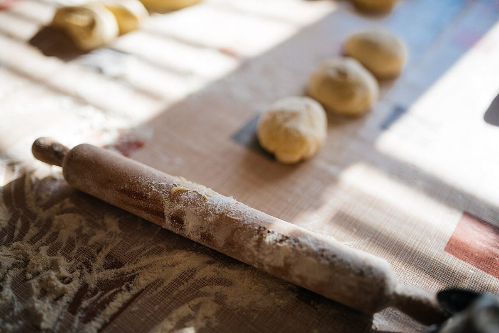
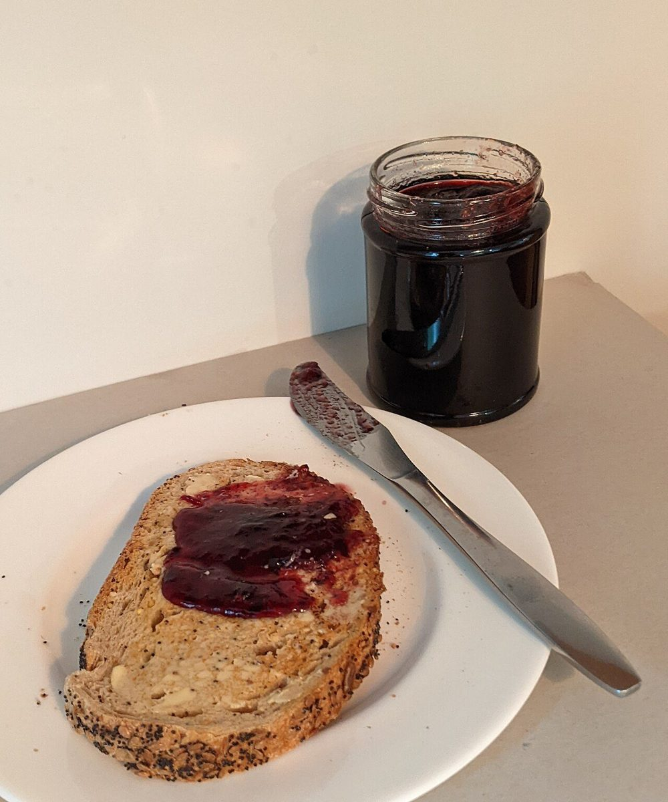

第四層 / 五層のうち
店のこと
お店について確認できているのは、所在地とInstagramのアカウントだけです。
このページの「想像してみる」部分は、制作側が想像して書いたものです。お店の実際の様子・考え・メニューとは関係がありません。
確認できていること
- 店名は「bakery&cafe kuribou」、業種はパン屋・カフェ
- 所在地は滋賀県大津市鳥居川町8-5-3(〒520-0854)
- 電話番号はなし。連絡はInstagramから
- 営業時間・定休日・メニュー・価格・ご予約・駐車場は準備中

想像してみる
実のいちばん甘いところ
栗の実は、剥き終わってはじめて味わえます。ここにはお店について分かっていないことが多く、実際に何を焼いて何を出しているのかも、制作側は知りません。想像するなら、粉や生地を扱う朝の時間と、カフェでひと息つく時間が同じ屋根の下にあるお店でしょうか(実際のお店の姿ではありません)。




町のこと
鳥居川町について
所在地の大津市鳥居川町は滋賀県にあります。この町や周辺について制作側が確認できたことはなく、お店と周辺の関係も分かりません。分かり次第、ご提供の情報をもとに書き足します。